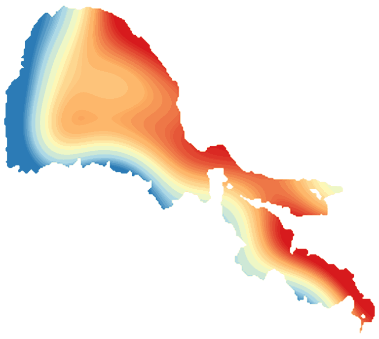

LakeScope › CA
Clear Lake today
Updated 2026-11-14 - Atlas Labs
Algae likely, 61°F water, level steady, near normal, calm this morning.
Water level
1322.46 ft
USGS gauge 11450000 - 2026-11-14
7-day trend: steady (+0.00 ft). Compared with normal for this date: -0.0 ft (same weeks, 2016-2025).
Water clarity and algae
Algae likely Last clear view: a few days ago. 1 cloudy pass since.
Surface temperature
61°F
seen from space on 2026-11-12

Ice
Open - 0% ice cover
Estimate from weather and satellite, not a measurement. Check the ice yourself before going on it.
Weather, next 3 days
| Day | Sky | High / low | Wind | Rain |
|---|---|---|---|---|
| Saturday | Partly Sunny | 57 / 46°F | 6 mph S | 4% |
| Sunday | Rain Showers | 56 / 42°F | 8 mph SSE | 99% |
| Monday | Slight Chance Rain Showers | 54 / 39°F | 6 mph WNW | 20% |
Sunrise 06:53 - sunset 16:57 - Waxing crescent. National Weather Service.
Get the LakeScope app: alerts and the 3-D view of Clear Lake